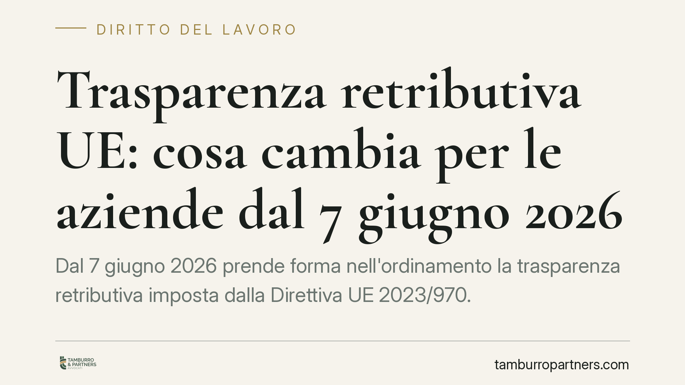

Trasparenza retributiva UE: cosa cambia per le aziende dal 7 giugno 2026
Dal 7 giugno 2026 prende forma nell'ordinamento la trasparenza retributiva imposta dalla Direttiva UE 2023/970. Le imprese dovranno comunicare informazioni sui livelli salariali, eliminare gli squilibri ingiustificati tra uomini e donne e adeguare le procedure di selezione. Un cambiamento che incide su contratti, organizzazione e gestione del rischio sanzionatorio. Vediamo cosa comporta concretamente.

Il contesto
La Direttiva UE 2023/970, adottata il 10 maggio 2023, mira a rafforzare l'applicazione del principio della parità di retribuzione tra uomini e donne per uno stesso lavoro o per un lavoro di pari valore. Gli Stati membri devono recepirla entro il 7 giugno 2026: da quella data le imprese italiane dovranno fare i conti con un insieme di obblighi di rendicontazione e trasparenza finora estranei alla nostra prassi.
Il principio non è nuovo. La parità retributiva è già sancita dall'art. 157 del Trattato sul funzionamento dell'Unione europea e, sul piano interno, dal Codice delle pari opportunità (D.Lgs. 198/2006). La novità è il metodo: si passa da un divieto di discriminazione a strumenti concreti di misurazione e disclosure del dato salariale.
Inquadramento normativo
La Direttiva introduce diversi obblighi. Il primo riguarda la fase precontrattuale: il datore di lavoro dovrà indicare la retribuzione iniziale o la relativa forbice già nell'annuncio di lavoro o prima del colloquio, e non potrà chiedere al candidato lo storico delle sue retribuzioni precedenti.
Il secondo obbligo è informativo: i lavoratori avranno diritto di conoscere i criteri usati per determinare retribuzione e progressioni, nonché il livello retributivo medio, disaggregato per sesso, dei colleghi che svolgono lo stesso lavoro o lavoro di pari valore.
Il terzo è la rendicontazione periodica. Le imprese sopra una certa soglia dimensionale dovranno comunicare il divario retributivo di genere alle autorità competenti. Quando il divario non giustificato supera il 5%, scatta l'obbligo di una valutazione retributiva congiunta con i rappresentanti dei lavoratori.
Sul piano del contenzioso, la Direttiva sposta l'onere della prova: in caso di azione per discriminazione, sarà il datore a dover dimostrare l'assenza di disparità ingiustificata. È un'inversione che modifica gli equilibri processuali a favore del lavoratore.
Implicazioni pratiche
Per le aziende l'impatto è organizzativo prima che giuridico. Servirà una mappatura delle mansioni basata su criteri oggettivi — competenze, responsabilità, condizioni di lavoro — per stabilire cosa sia un "lavoro di pari valore". Senza questa griglia, sarà difficile difendere differenze retributive in sede di accertamento.
Le politiche di selezione vanno riviste: gli annunci dovranno contenere la fascia retributiva e i moduli di candidatura non potranno più indagare sulle retribuzioni pregresse. Anche i sistemi premiali e di progressione dovranno poggiare su parametri trasparenti e verificabili.
Il profilo sanzionatorio non va sottovalutato. La Direttiva chiede agli Stati di prevedere sanzioni effettive e dissuasive, e l'inversione dell'onere probatorio aumenta l'esposizione al rischio. Un divario retributivo non documentato e non giustificato diventa, in giudizio, un elemento sfavorevole all'impresa.
Resta un margine di incertezza: la legge nazionale di recepimento non è ancora stata adottata e definirà soglie dimensionali, cadenze di reporting e apparato sanzionatorio. Le imprese dovrebbero però muoversi in anticipo, perché l'adeguamento dei sistemi di classificazione e retribuzione richiede tempo.
Cosa fare in concreto
- Avviate una mappatura interna delle mansioni su criteri oggettivi (competenze, responsabilità, sforzo, condizioni), così da poter qualificare i "lavori di pari valore".
- Effettuate un audit retributivo per individuare divari di genere e verificarne la giustificabilità su basi documentabili.
- Aggiornate le procedure di selezione: inserite le fasce retributive negli annunci ed eliminate ogni richiesta sullo storico salariale dei candidati.
- Rendete trasparenti i criteri di progressione e premiali, mettendoli per iscritto e comunicandoli ai lavoratori.
- Coinvolgete le rappresentanze sindacali e predisponete un sistema di archiviazione dei dati retributivi pronto per gli obblighi di rendicontazione.
Monitorate inoltre l'iter del decreto di recepimento: soglie e tempistiche definitive potrebbero incidere sulle priorità di intervento.
Disclaimer
Contributo informativo a cura di Tamburro & Partners Avvocati. Non costituisce parere legale.
Ogni storia di lavoro ha i suoi tempi.
Se gestisci HR e vuoi un confronto su contenzioso, ispezioni o licenziamenti, scrivi allo studio. Ti rispondiamo entro un giorno lavorativo.